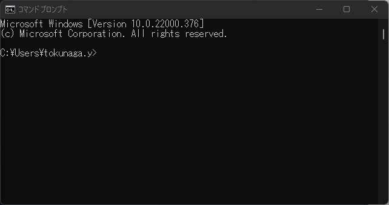
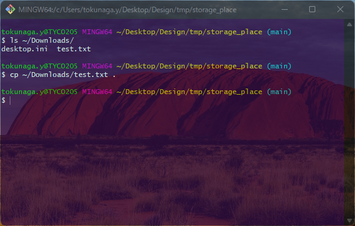
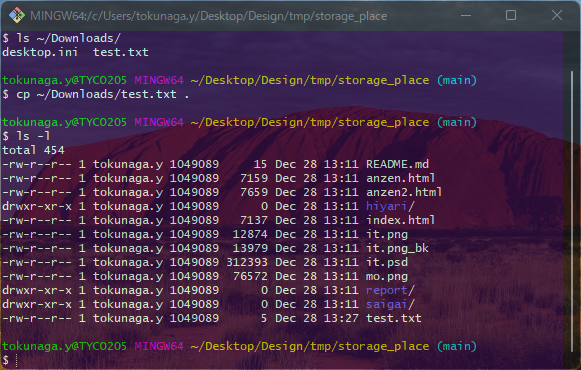

1. Git ?
ググると、分散型バージョン管理システムです。と出てきます。
が、それってなんだよという方向けに本書を作成します。
そのため、厳密な説明も省きます。
2. 使えたら何が嬉しい？
-
変更の差分がわかりやすい
-
中央集権型ではなく、分散型なので誰が抜けても増えても管理が楽（ローカルにリポジトリがある）
-
メリット説明するのにも用語の定義が必要なのでそっちを先にします
-
3. 用語の定義
- Git
-
よく誤解されがちですが、Gitはサービス名ではなく、総称です。システム開発などではファイルを細かく何度も変更しますので、それらをバージョン管理して「最新のものはどれか」「以前はどのような中身だったか」などの情報を管理できるような技術を指します。
- GitHub
-
Gitを利用したサービス。GitLabやBacklogもGitを利用するが、競合の中では頭一つ抜けているイメージ。
- ターミナル
-
以下のような黒い画面です。
皆さんが普段見られている色鮮やかな画面は、マウスを動かすとカーソルが動き、ショートカットをクリックするとWebページが開きますが、ターミナルはコマンドと呼ばれる命令以外に反応しません。
ターミナルアプリケーションにコマンドプロンプト、パワーシェル、Git Bashなどがあります。
グラフィック有の画面がGUI、無の画面がCUIと呼ばれます。皆さんがCUIを見ることは恐らく無いでしょうが、ターミナルはGUI環境からCUIの操作をするための媒介ツールとなります。 本ドキュメントでは主に、初歩的なコマンドについて記載します。
- リポジトリ
-
ファイルやディレクトリの状態を記録する場所です。保存された状態は、内容の変更履歴として格納されています。
リモートリポジトリはGithubを選択することが多いと思います。
ローカルリポジトリはあなたのPCの中にあります。
GitHubの場合は、無料で非公開のリポジトリを作成できます。 - ディレクトリ
-
フォルダのこと。べつにどっちでもいいと言ったら怒られるが、CUIを触るときにフォルダと呼ぶのは違和感を感じるのでディレクトリで問題ない。
4. Gitの概念
以下、無理やり覚えること。
ワークツリーはワークツリー(?)という場所、コミットはコミット(?)という処理、という認識でOK。
-
addして、ワークツリー内のファイルをインデックスに追跡対象として登録 -
commmitして、インデックスに登録されたファイルの差分がローカルリポジトリに格納 -
pushして、ローカルリポジトリの情報をリモートリポジトリに連係

5. 準備
5.1. GitHubアカウント
以下から登録。登録済みならスキップ。
https://github.com/
5.3. 見方
| 德永はBashのインタフェースをカスタマイズしているため、配色や透過度がデフォルト値が異なりますがご承知おきください。 |
- tokunaga.y
-
ユーザ名
- @TYCO205
-
ホスト名(パソコンに付けれられた名前)
- MINGW64
-
gccコンパイラ(無視してOK)
- /
-
今開いているディレクトリ
「/(ルート)」とは、一番上を意味する。
Git Bashにとっての一番上ってどこ？は気にしなくてOK。
6. 基本操作
以下、実際のキャプチャーを元に説明します。
6.1. ファイル一覧の取得
ls 今いるディレクトリにあるフォルダやファイルを表示します。
6.2. ディレクトリへの移動
cd 特定のフォルダに移動します。
半角スペースを空けて行きたいディレクトリパスを入力します。例では、「~(ホームディレクトリ)」へ移動しています。
|
パスが思い出せないときなんてしょっちゅうだと思います。ターミナルでは少し文字を打ってTabキーで補完できます。 以下はDesktopの下にあるディレクトリ名が分からなかったときにTabキーを2連打したときです。 |
6.3. リモートリポジトリのクローン
-
ここからがgitの操作になります。クローンは本当はもっと難しいのですが、ここではおまじないように「ただのダウンロード」だと思ってください。
-
以下のコマンドでstorage_placeリポジトリをクローンします。
git clone https://github.com/tyconivms/storage_place.git-
クローンしたらディレクトリ移動します。
6.4. 変更を加える作業
-
今回の例では、test.txtに変更を加えます。別のフォルダから差し替えるという手法を使います。
-
新しいtest.txtをダウンロードディレクトリに用意しておきました。
-
cpコマンドで今いるディレクトリまでコピーします。-
「今いるディレクトリ」は「~/Desktop/Design/tmp/storage_place」ですが、ターミナル上では「.」で表現できます。
cp ${元々の場所} ${新しいパス} -
いまいち持ってこれてるかどうか分かりにくいと思いますが、
lsの詳細化オプション「-l」で更新日時を確認できます -
test.txtが更新されてますね。
-
6.5. git add
-
ファイルをインデックスに登録します。(説明済み)
といっても一個一個登録するのも時間がかかるため、以下のように登録します。
git add .-
.(ここの全部)という意味です。
6.6. git commit
-
リモートリポジトリに反映させる前にまず、commitする必要があります。
-
システム開発現場ごとでいろんなお約束（Commit粒度やメッセージルール）があるのですが、ここでは特に決めません。IT企業じゃないので。
-
といってもメッセージは必要です。「あ」とかはやめましょう、、
変更内容にタイトルをつける、と思ってください。
git commit -m "ここにコミットメッセージ"-
ここまでしてもまだ、GitHubには変更は伝わっていません。
6.7. git push
-
いよいよGitHub側のリモートリポジトリに変更を伝えます。
-
コマンドの意味はあまり考えなくていいです。
git push origin main-
いちおうGitHub側を確認してみると、、、
-
いけてます！
7. まとめ
addしてcommitしてpushするだけでした。
付録 A: 説明を省いたこと
-
branch
-
本来はmainブランチを直接更新するようなことはしない。
-
-
pull
-
複数人開発の場合、誰かがリモートリポジトリに変更を加えた場合はまずローカルリポジトリに反映させるためにpullする必要がある。
-